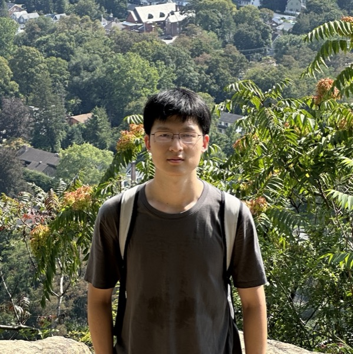
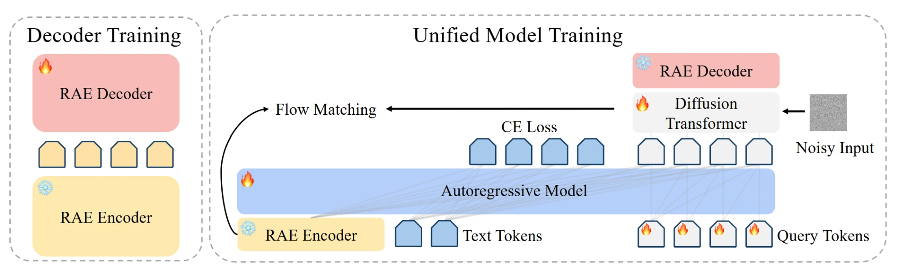
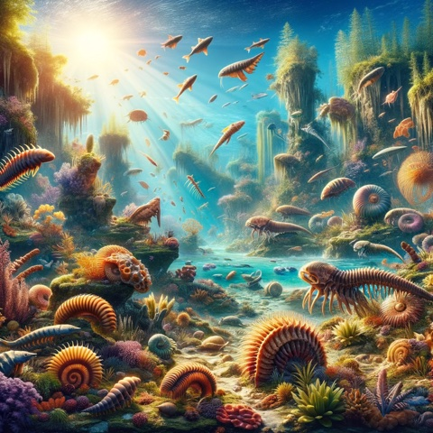

I am a Master's student in Data Science at New York University, working with Prof. Saining Xie at NYU Courant. Previously, I worked with Prof. Zhe Sage Chen at NYU Langone on EEG biomarkers of chronic pain. I received my B.A. in Computer Science from NYU in 2024.
My research interests lie in computer vision and multimodal learning, with a focus on visual representation learning, world models, and visual agents that learn from interaction.
Publications
* equal contribution

CVPR 2026 Findings
Scales representation autoencoders to open-ended text-to-image generation and compares them with VAE latents across model and data scales.

NeurIPS 2024 · Oral
A vision-centric study of multimodal LLMs: how the choice of vision encoder, connector and data shapes what the model can see.
Manuscript, 2026
Resting-state EEG features that separate chronic back pain patients from healthy controls.